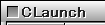

ウィンドウロックウィンドウロック
ウィンドウロックウィンドウロック ウィンドウロック状態へ移行するには、「メインメニュー」から「ウィンドウロック」を選択するか、タイトルバーをホイールクリックしてください。
ウィンドウロック状態へ移行するには、「メインメニュー」から「ウィンドウロック」を選択するか、タイトルバーをホイールクリックしてください。
 ウィンドウロック状態で、再度「メインメニュー」の「ウィンドウロック」を選択するか、タイトルバーをホイールクリックするとロック状態が解除されます。
オプション「表示」の「常に手前に表示する」と「ウィンドウロック中のみ」をチェックしておくと、ウィンドウロック時にCLaunchが最前面化されます。
ウィンドウロック状態で、再度「メインメニュー」の「ウィンドウロック」を選択するか、タイトルバーをホイールクリックするとロック状態が解除されます。
オプション「表示」の「常に手前に表示する」と「ウィンドウロック中のみ」をチェックしておくと、ウィンドウロック時にCLaunchが最前面化されます。